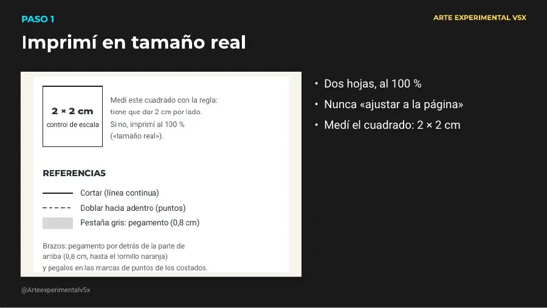
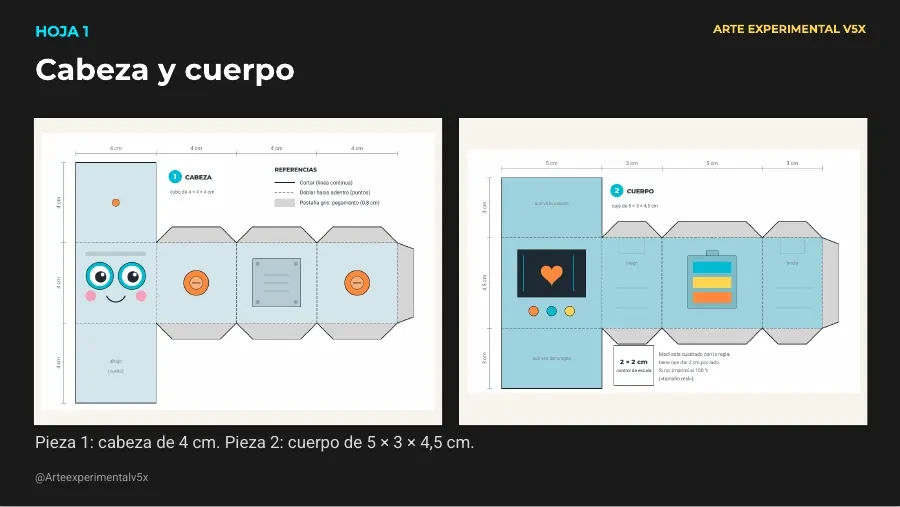
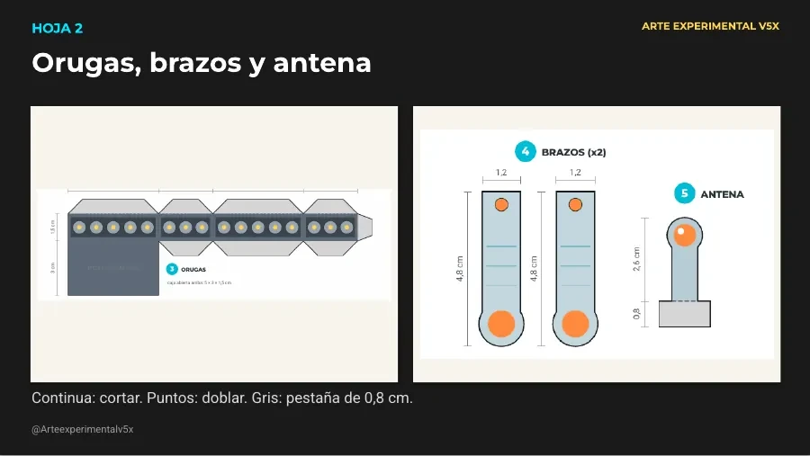
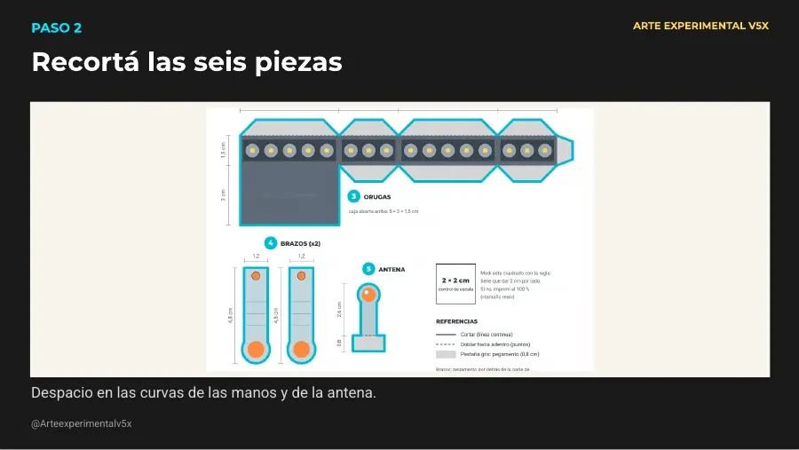
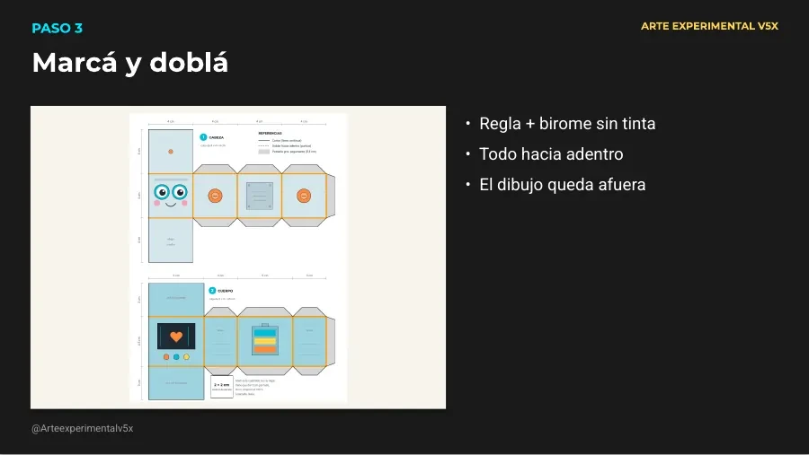
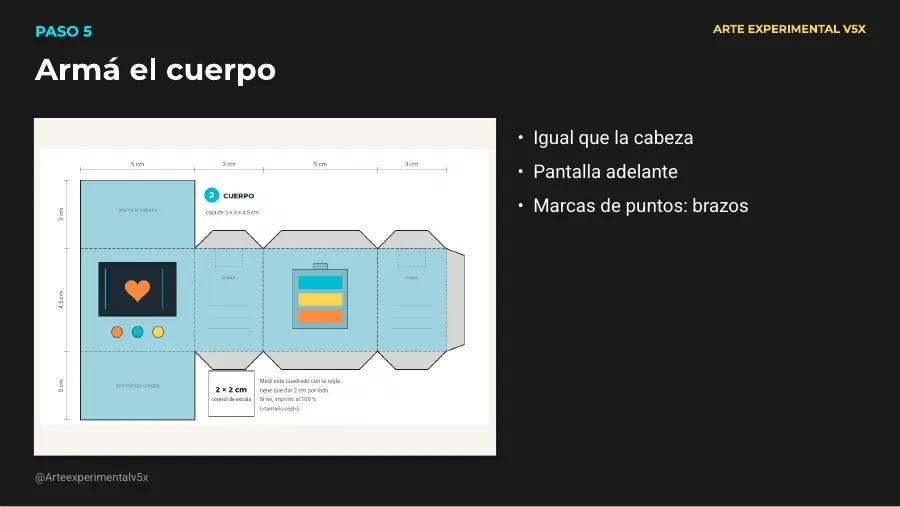
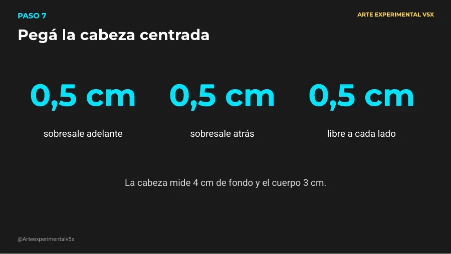

Moldes › Molde de robot Bulón

Molde para imprimir pendiente
Molde de robot Bulón
Molde original en A4 (3 hojas) con piezas para recortar, doblar y pegar, más la hoja de instrucciones. Video: próximamente.
Vista previa del PDF


Medidas
| Cabeza | cubo de 4 × 4 × 4 cm |
|---|---|
| Cuerpo | caja de 5 × 3 × 4,5 cm |
| Pestañas de pegado | 0,8 cm |
| Robot armado | unos 12 cm de alto |
Materiales
- Hoja A4 común o cartulina de 120 a 180 g/m²
- Tijera
- Pegamento (de barra o plasticola)
- Regla
- Opcional: birome sin tinta para marcar
Antes de recortar
Imprimí en A4 al 100 % («tamaño real», sin «ajustar a la página») y medí el cuadrado de control: tiene que dar 2 × 2 cm.
Paso a paso
Paso 1
Recortá las seis piezas por la línea continua: 1 cabeza, 2 cuerpo, 3 orugas, 4 los dos brazos y 5 la antena.
Paso 2
Marcá cada línea de puntos con la regla y una birome sin tinta, y doblá todo hacia adentro, con el dibujo hacia afuera.
Paso 3
Cabeza: pegá la pestaña lateral para cerrar el anillo de cuatro caras. Después poné pegamento en las pestañas de arriba y cerrá la tapa; lo mismo abajo.
Paso 4
Cuerpo: igual que la cabeza. Cerrá primero el costado, después la tapa de arriba y por último la de abajo.
Paso 5
Orugas: cerrá el costado y la base. Arriba queda abierta: doblá sus cuatro pestañas hacia adentro, poné pegamento encima y apoyá el cuerpo.
Paso 6
Pegá la cabeza centrada sobre el cuerpo. Como la cabeza mide 4 cm y el cuerpo 3 cm de fondo, sobresale medio centímetro adelante y medio atrás; a los costados queda medio centímetro libre de cada lado.
Paso 7
Brazos: poné pegamento por detrás de la parte de arriba (0,8 cm) y pegalos sobre las marcas de puntos de los costados del cuerpo. Antena: doblá su pestaña y pegala sobre el punto naranja de la cabeza.
Las ilustraciones de los pasos están en la última hoja del PDF (vista previa arriba).
Consejos
- Las tapas de los cubos se cierran mejor si empujás desde adentro con el dedo o con el lápiz.
- Pestañas chicas: usá poquito pegamento para que no se escape por los bordes.
- Medidas finales: cabeza de 4 cm, cuerpo de 5 × 3 × 4,5 cm y orugas de 1,5 cm de alto. Licencia: uso personal libre; no reventa. Podés imprimirlo y armarlo todas las veces que quieras. No se permite vender este archivo ni copias impresas. Diseño original de Arte experimental v5x (YouTube: @Arteexperimentalv5x) · 2026 Arte experimental v5x · Página 3 de 3
Diapositivas del video (Google Slides)















Video
Video próximamente.